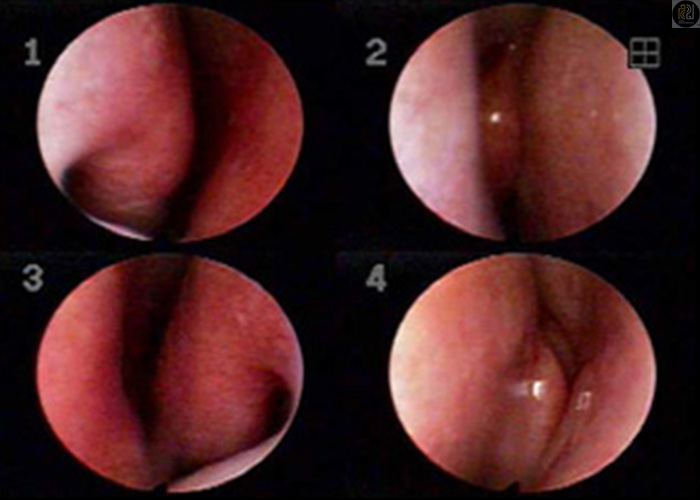
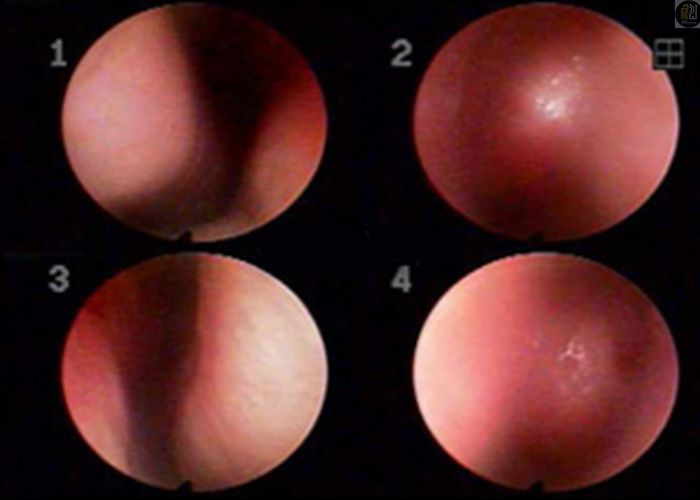
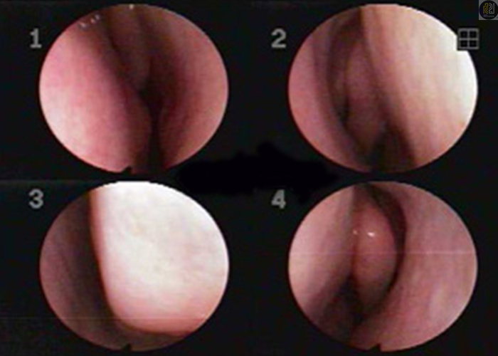
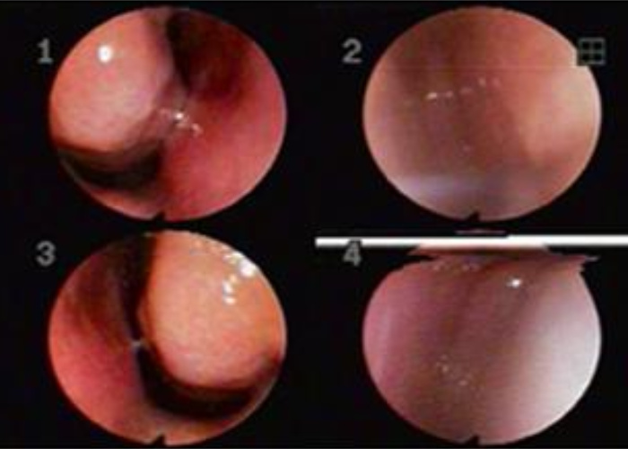
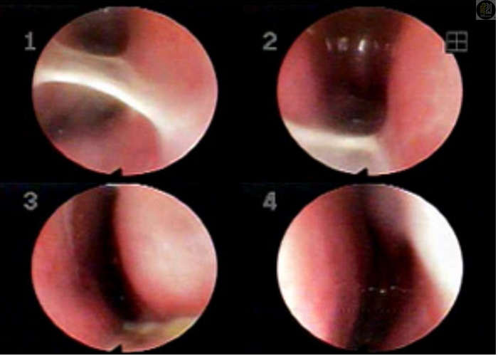
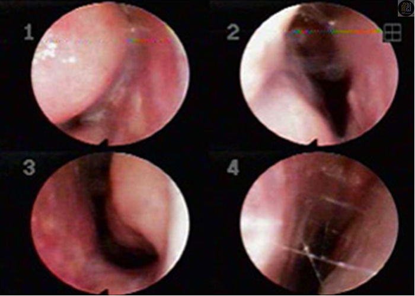
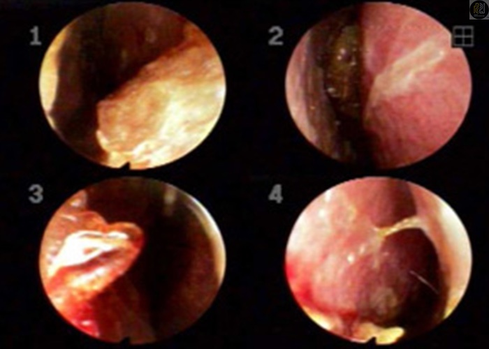
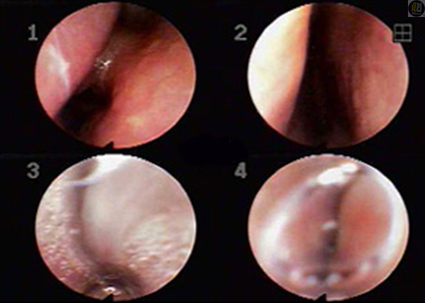
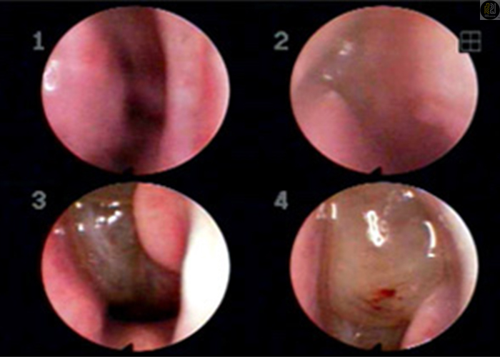
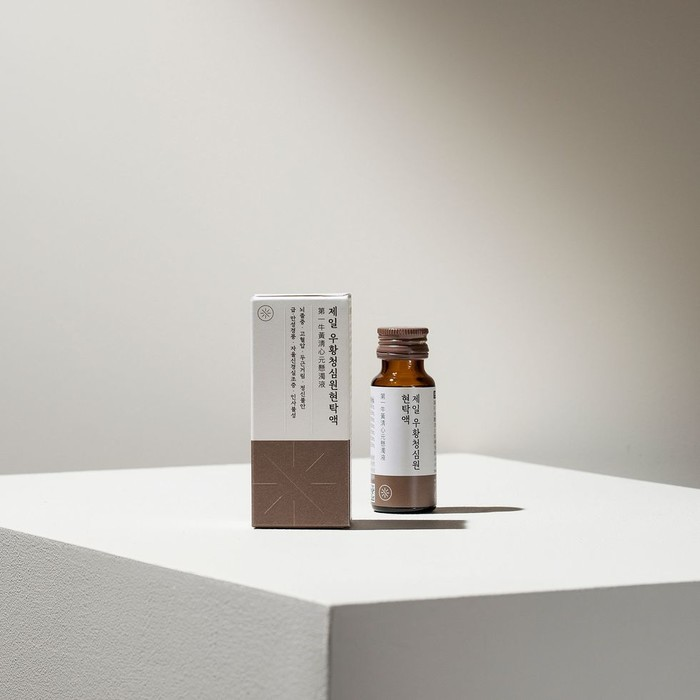

검사 소견에 한의학적 패턴을 더해 봅니다.
- 01코 안의 소견
- 02증상과 생활
- 03변증진단·패턴진단
| 구분 | 살펴볼 점 | 알려주실 내용 |
|---|---|---|
| 검사·진찰 | 코 안의 소견 | 기존 검사 결과 |
| 증상·생활 | 불편의 양상과 변화 | 언제, 얼마나 불편한지 |
| 패턴진단 | 정보를 종합한 한의학적 해석 | 유형에 대한 의료진 설명 |
궁금한 항목을 펼쳐보세요.
필요한 설명과 자료를 주제별로 확인할 수 있습니다.
016단계로 진단합니다＋
6단계로 진단합니다
전화, 문자, 카카오톡, 네이버. 편한 방법으로 문의주시고, 예약하세요.
02변증진단과 일반적인 코 상태＋
코와 목은 우리 몸의 1차 면역기관입니다.
유소아 시기에는 전신의 변화에 매우 민감하게 반응하고, 증상도 더 격하게 나타납니다.
질병을 바라보는 관점은 동양의학, 서양의학이 약간씩은 다릅니다만 결론적으로 증상의 개선, 치료 완료로 이르는 길을 고민한다는 부분은 같습니다.
한의학에서는 비염을 조금 더 세밀하게 구분합니다.
얼핏 이해가 안되는 내용일 수는 있습니다. 하지만 6단계 변증진단과 같은 조금 더 유형화된 진단방법을 택하고 망문문절 등의 전통적 진단과 현대적 진단검사가 함께 진행된다면
병의 원인, 몸의 상태 등을 매우 세밀하게 파악할 수 있고 그에 따라 바른 치료를 계획할 수 있습니다.
I 6단계 진단, 전형적 유형

I 일반적인 코 상태
코로 숨을 쉴 수 있고, 냄새를 맡을 수 있음.
공기의 습도와 온도조절, 방어작용과 같은 코의 정상적인 역할이 가능함.
미세먼지의 증가로 교과서적으로 깨끗한 콧속 상태는 과거에 비해 현저히 줄어들고 있음.
031단계 鼻鼽, 鼻塞＋


I 1단계 鼻鼽, 鼻塞
경등도의 콧물, 코막힘, 소양감
잘 낫지않는 콧물 기침 감기
간혹 미열이 나거나 두통, 오한, 목 건조감이 동반됨.
유형, 병기
폐기허 (경증)
(태양~소양병기)
원인
감기/ 바이러스 감염
후유증, 계절성 알레르기 등
042단계 鼻窒, 鼻流涕＋

I 2단계 鼻窒, 鼻流涕
중등도의 콧물(오전 심함), 코막힘, 소양감, 쉽게 감기에 잘 걸림
목안의 건조감, 답답함 동반(무언가 걸린 듯함)
속이 더부룩하거나 평소 손발 순환이 잘 안됨.
유형, 병기
폐기허 + 한/혈허
(태양~소양병기)
원인
감기/감염성질환의 후유증
약물, 자극원이 명확함
053단계 鼻齆, 鼻竅閉塞, 鼻竅不利＋

I 3단계 鼻齆, 鼻竅閉塞, 鼻竅不利
줄줄 흐르는 맑거나 탁한 콧물, 코막힘, 소양감, 후비루 및 호흡불편감(때때로 콧물이 줄어든 경우도 있슴)
냄새코, 입냄새, 경한 복통 또는 소화 불량, 설사 또는 약간의 대변 불편감등 소화기 증상이 동반
유형, 병기
폐기허 + 한습/습열
(양명~소양병기)
원인
폐기가 허약해 습과 담이
조절되지 못해 나타남
064단계 鼻癰, 鼻臭, 鼻淵, 鼻涕, 鼻槁＋


I 4단계 鼻癰, 鼻臭, 鼻淵, 鼻涕, 鼻槁
줄줄 흐르는 맑거나 탁한 콧물이 있거나,
코막힘(꽉 막힌 경우 후비루만 있음), 재채기가 심함.
간혹 콧물이 흐르지는 않으나 코가 붓고 막히는 느낌은 있는 경우도 있음.
대변이 묽거나 변비 경향, 머리가 무겁고 쉽게 피로를 자주 느낌. (열증의 경우은 예외)
유형, 병기
비기허습성, 폐기허습성 (한/열)
(소양~태음병기)
원인
폐기, 비기가 약화되어 습이
오랜기간 조절되지 못함
075단계 鼻涕, 鼻癰, 鼻藁＋

I 5단계 鼻涕, 鼻癰, 鼻藁
코막힘(완전히 막혀 있거나, 막히지는 않은 경우 답답해하는 경향), 콧물이 줄줄 흐르거나, 코 가려움증이 심합니다. 거의 대부분 입으로 숨을 쉬고 야간에 불편감 동반. 과로 시 허열이 떠서 눈 밑이 휑하고 어두워지고 인후염이나 편도선염이 잘 발생하곤 합니다.
유형, 병기
어혈, 신허열형
(소양~궐음병기)
원인
폐, 비, 신 세장부가 약해져
허열이 발생되어 나타남
086단계 鼻茸, 鼻塞＋

I 6단계 鼻茸, 鼻塞
코막힘, 코안의 이물감,
기침, 콧물, 가래, 후비루 등이 형성되는 경우가 많습니다.
또한 비중격의 심한 만곡, 비강내 물혹과 같이 이물이 생기게 되는 경우도 흔합니다.
유형, 병기
풍한습, 풍습열 어혈형
(소양~태음병기)
원인
비강내부 구조, 기능 모두가 취약한 경우
만성 난치성 질환 (수술 필요)
09호흡기내과 이야기＋
I 호흡기내과 이야기

진료 전, 세 가지만 준비해 주세요.
증상의 기록
가장 불편한 점과 시작한 시점, 반복되는 상황을 알려주세요.
검사와 치료 이력
기존 검사 결과와 복용 중인 약을 함께 확인합니다.
꼭 묻고 싶은 질문
치료 목표와 생활관리 등 궁금했던 점을 편하게 이야기해 주세요.
이 안내는 건강에 대한 이해를 돕는 참고 정보입니다. 증상과 질환에 대한 정확한 판단은 의료진의 진료가 필요합니다.